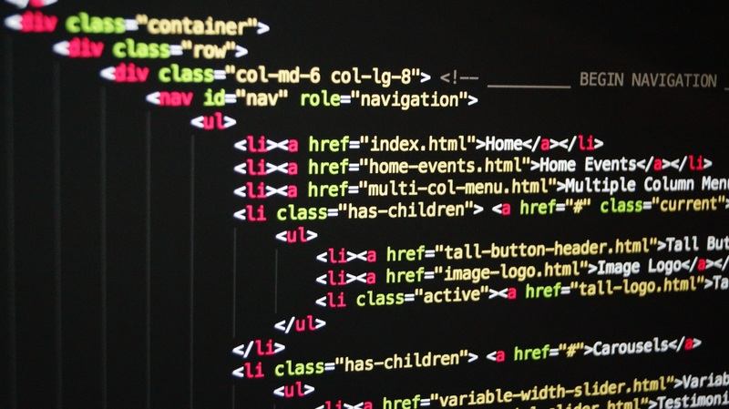

Czym są strony internetowe
Na początek Najlepiej znać datę oraz Kto wymyślił 1 stronę internetową na świecie.
Autorem Pierwszych stron internetowych jest Tim Berners-Lee.
A pierwsza strona została uruchomiona 6 sierpnia 1991 Roku,
przez firmę CERN- Europejska Organizacja Badań Jądrowych.
Strona internetowa jest to logicznie uporządkowany zbiór kodu znajdujących się w dokumencie HTML,

który jest prezentowany za pomocą prze różnych przeglądarek internetowych,
np: Opera, Firefox, Google Chrome, Safari, Brave czy Microsoft Edge.
Do Pisania Stron Internetowych wykorzystujemy języki Html, CSS oraz JavaScript.
Przeglądając strony internetowe możemy napotkać programy specjalne stworzone do przeglądarek tak zwane "Wtyczki".
Każda takie oprogramowanie może być inne to wszystko zależy z jakiej przeglądarki korzystamy.
Najpopularniejsze Wtyczki są to:
- AdBlock
- Ghostery
- Google Translator for Firefox